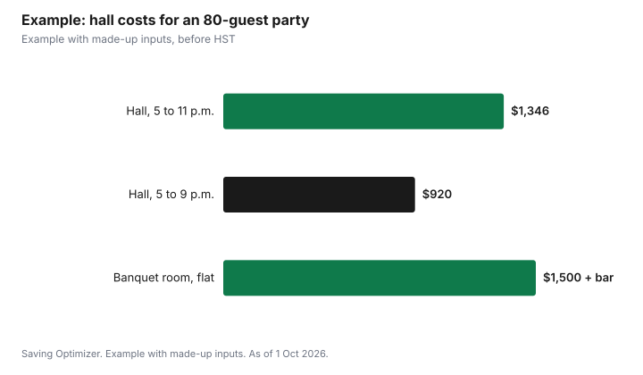

Events · Canada
Renting a Hall for a Party: Community Centres, Legions and Church Halls
Renting a community hall is often the cheapest indoor option for a party of 40 to 100 people, but the price depends on the hour count, whether alcohol is served and what time you finish. At Toronto's Ralph Thornton Community Centre, for example, 2026 rates for private functions are $70 to $104 an hour without alcohol and $104 to $157 an hour with alcohol, before HST, and bookings that run past 9 p.m. carry an out-of-hours fee of $135 or $175 an hour. Kitchens cost extra. If you serve alcohol at a hall without a liquor licence, add an Ontario special occasion permit of $50 or $150 a day. In summer, a park picnic permit in Toronto is $112.57 for up to 200 people.
Key takeaways
- Ask for the full hourly rate for your category, including alcohol surcharges.
- After-hours fees can double the cost of an evening party.
- Kitchens, setup time, cleaning and insurance are often extra.
- Alcohol at an unlicensed hall in Ontario needs a $50 or $150 permit.
- Toronto park picnic permit: $112.57 for up to 200 people, plus insurance.
- Example with made-up inputs: a 70th birthday party at three venues.
One community centre's 2026 rates
Rates are set by each venue, so treat this as a worked example of how a fee schedule is built, not as a market price. Ralph Thornton Community Centre puts private functions without alcohol in its Basic category and private functions serving alcohol in its Premium category.
| Room or item | Private, no alcohol | Private, with alcohol |
|---|---|---|
| Community room | $70 | $104 |
| Full auditorium | $104 | $157 |
| Auditorium, one section | $34 | $52 |
| Full kitchen | $38 | $38 |
| Out-of-hours fee (before 9 a.m. or after 9 p.m.) | $135 | $175 |
| Holiday rate, full auditorium | $309 | $364 |
The out-of-hours fee applies to bookings that start before 9 a.m. or extend past 9 p.m. Holiday rates are listed separately for all users. Non-profits and local groups get lower categories, so if your party is run by a club or association, ask which category applies.
Legion, church and cultural halls
Royal Canadian Legion branches, places of worship and cultural associations often rent halls to the public, and some may have a liquor licence or an in-house bar, which can remove the need for a permit. Prices and rules vary by branch and congregation, and many do not publish rates online, so call and ask the questions below. Some require you to use their bar staff or caterer, which changes the budget more than the room fee.
Questions to ask any venue
- What is the hourly or flat rate for my type of event, and does it change if alcohol is served?
- Is setup and cleanup time billed? Can I get in early to decorate?
- Is there an after-hours or holiday rate?
- Does the venue have a liquor licence, or do I need a special occasion permit?
- Is event insurance required, and can I buy it through the venue?
- Is there a damage deposit, and when is it returned?
- Are tables, chairs, linens, a sound system and kitchen use included?
- Do I have to use the venue's caterer or bartender?
- What is the cancellation policy?
Park picnic sites
For warm-weather parties, a park can be cheaper than any hall. In Toronto, a booking is required for park gatherings of more than 25 people or if you bring your own barbecue; smaller groups without a barbecue need no booking. A permit for a picnic area, picnic shelter or other social gathering is $112.57 for up to 200 people, before HST, and an insurance fee may apply: $33.48 for 1 to 25 people or $65.88 for 26 to 100. Serving alcohol, serving food to the public or amplified sound needs a special event booking instead. The regular picnic season runs from May to September, and 2026 bookings opened on 13 February, so popular shelters book early.
Deposits, contracts and cancellation
Most venues ask for a deposit to hold the date and a damage deposit closer to the event. Get the agreement in writing, with the date, hours, rooms, rate category, what is included and the cancellation terms. Note when the deposit becomes non-refundable and whether you can move the date instead of losing it. Take photos of the room when you arrive and before you leave, so a damage claim can be compared with the condition you found. If the venue requires insurance, buy it early, since the venue may ask for proof before releasing the keys or confirming the booking.
When to book
Popular Saturday dates and holiday weekends go first, especially in December and during wedding season. For a milestone party or reunion, start calling venues several months ahead, and have two backup dates ready. Weeknight or Sunday afternoon bookings can fall in a cheaper time slot and avoid after-hours fees altogether.
Hidden costs
- Setup and teardown hours billed at the full rate.
- Kitchen fees if your caterer needs to warm food.
- Cleaning fees or a forfeited deposit.
- Event insurance.
- Special occasion permit and alcohol surcharges.
- Rentals for linens, decor or audio.
Example with made-up inputs
These numbers are an example with made-up inputs. Rita plans a Saturday 70th birthday party for 80 people, 5 p.m. to 11 p.m., with an open bar. At a community hall like the one above, six hours in the full auditorium at the alcohol rate is 4 hours at $157 plus 2 hours after 9 p.m. at $175, $978, plus 6 hours of full kitchen at $38, $228, a $50 permit and a made-up $90 for insurance, totalling $1,346 before HST. Ending at 9 p.m. instead would cost $628 plus $152 for the kitchen, $50 and $90, or $920. The example assumes the out-of-hours fee replaces the regular rate after 9 p.m.; ask the venue whether it is charged instead of, or on top of, the room rate. A made-up $1,500 flat rate at a licensed banquet room, with no permit needed but a required bar service, may cost more or less depending on the bar terms.
| Option | Room | Kitchen | Permit and insurance | Total before HST |
|---|---|---|---|---|
| Hall, 5 to 11 p.m. | $978 | $228 | $140 | $1,346 |
| Hall, 5 to 9 p.m. | $628 | $152 | $140 | $920 |
| Licensed banquet room, flat | $1,500 | Included | Not needed | $1,500 plus bar |

Steps
- Set your guest count, date and hours.
- Shortlist three venues, including a community centre.
- Ask each the questions above and get quotes in writing.
- Check whether you need a special occasion permit.
- Book, pay the deposit and read the cancellation terms.
- Plan setup and cleanup within the hours you pay for.
Common mistakes
- Booking past 9 p.m. without checking after-hours fees.
- Forgetting setup time.
- Assuming every hall allows outside alcohol.
- Missing the insurance requirement.
- Booking a park shelter too late in the spring.
Related: special occasion permits and catering versus potluck.
Sources
- Ralph Thornton Community Centre, Rates - Updated for 2026, ralphthornton.org, as of 1 Oct 2026.
- City of Toronto, One-Time Booking of Parks and Recreation Facilities (picnics, firepits and BBQs), toronto.ca, as of 1 Oct 2026.
- Alcohol and Gaming Commission of Ontario, Apply to sell or serve alcohol at a private event, agco.ca, as of 1 Oct 2026.
- Insurance and banquet room amounts in the example are made-up inputs.
Frequently asked questions
How much does it cost to rent a community hall in Toronto?
It varies by centre. Ralph Thornton Community Centre lists $70 to $157 an hour for private functions in 2026, before HST, depending on room and alcohol.
Do halls charge more if alcohol is served?
Some do. At Ralph Thornton, the full auditorium is $104 an hour without alcohol and $157 with alcohol.
Do I need a permit to serve alcohol at a hall?
In Ontario, yes, unless the hall's liquor licence covers your event. Permits are $50 a day for free drinks and $150 for a cash bar.
How much is a picnic permit in Toronto?
$112.57 for up to 200 people, before HST, plus an insurance fee of $33.48 or $65.88 depending on group size.
Do I need to book a park for a party?
In Toronto, yes, for more than 25 people or if you bring your own barbecue.
What extra costs come with a hall rental?
Kitchen use, after-hours fees, setup time, cleaning, insurance, deposits and alcohol permits.
Researched and drafted with AI assistance and fact-checked against official Canadian sources. How we create content.
Disclosure: Saving Optimizer may earn a commission if a partner link is added later. No partnership is claimed on this page. Education only.